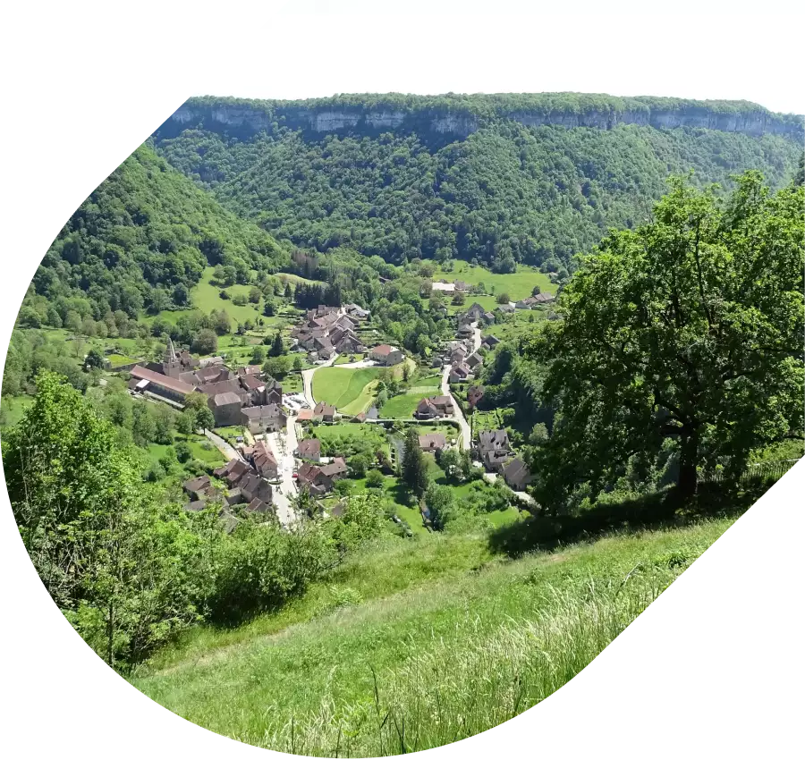
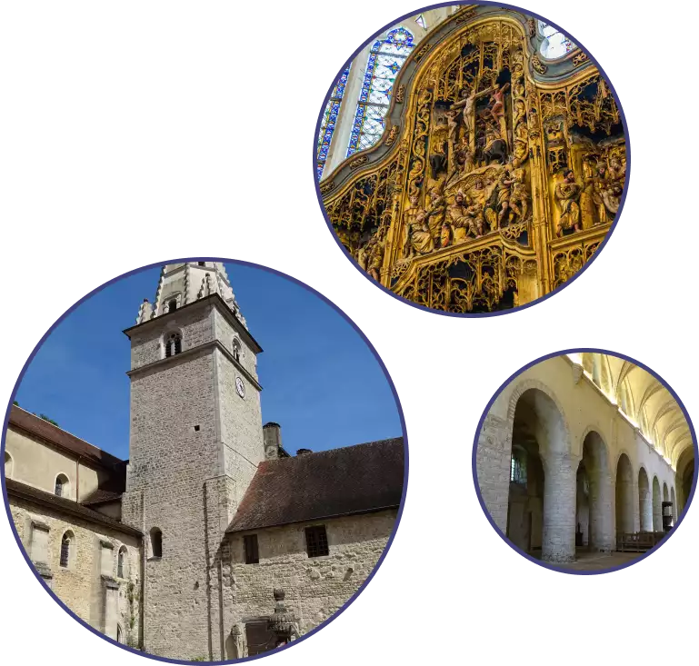
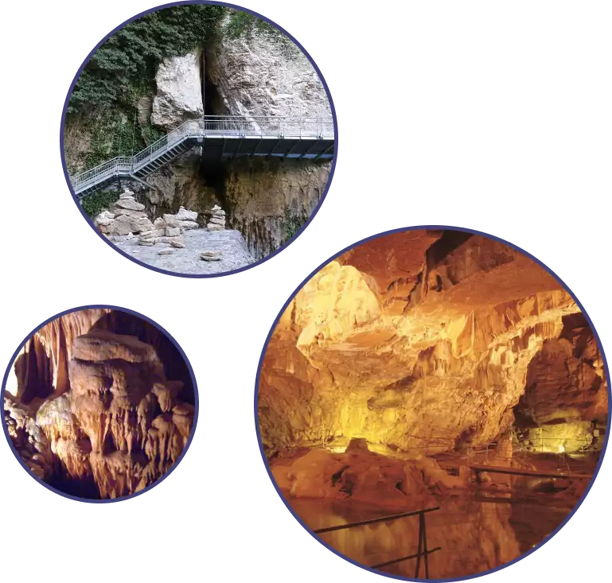
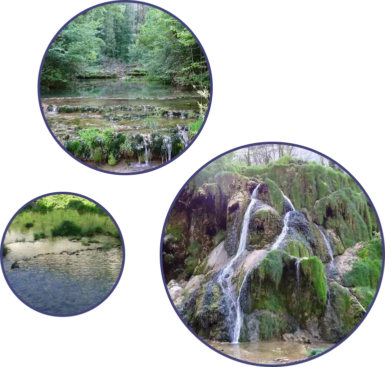

bienvenue à
Découvrez
Baume-les-Messieurs
L'un des plus beaux
villages de France
Niché dans une reculée aux confins de trois vallées dans un panorama exceptionnel, Baume-les-Messieurs est reconnu comme l’un des plus beau village de France. L’historique riche de la ville la rend unique pour tout historien en herbe et les nombreuses activitées disponibles sont idéales pour tout les membres de la famille.

L'abbaye
Venez visitez l'Abbaye bénédictine riche en histoire !
(En savoir plus)Les Grottes
Enfoncez-vous dans les entrailles de la terre
avec les grottes de Baume-les-Messieurs !
(En savoir plus)Les Cascades
Rafraichisez-vous près de nos cascades magnifiques !
(En savoir plus)La Reculée
Admirez cette vallée extraordinaire
grâce à ses nombreux points de vues !
(En savoir plus)

L'Abbaye Impériale
L’Abbaye Saint-Pierre de Baume-les-Messieurs est une ancienne abbaye bénédictine. Dotée d’une architecture reflétant le cours des siècles et d’un mobilier sacré, riche et divers.
-Retable flamand du XVIe siècle et statuaire bourguignonne du XVeme
-La Chapelle des Tombeaux, l’église abbatiale inspire par sa majesté.
-La nef, construite sur la règle bénédictine, a conservé un dallage d’une quarantaine de pierres tombales.
-A côté de la maison abbatiale, l’église arbore un joli portail sculpté du XVème siècle.
Ouverture :
Tout les jours à partir de 10h jusqu’à 18h.
Départ des visites guidées : 10h15 / 11h00 / 14h15 / 15h15 / 16h15
Les grottes de Baume
Découvrez les spectaculaires grottes de baume. Parmi les plus belles d’Europe avec plus d’un Km de galeries aménagées.
Faite un voyage au centre de la terre, pour toute la famille. Découvrez la plus haute verticale souterraine du Jura grâce à nos nombreuses visites guidées disponible toute la journée. Apprenez l’histoire de cette grotte incroyable grâce à nos nombreux guides expérimentés.
La température de la grotte est de 11°C. Une visite dur 1h en moyenne.
Grand parking bus et voiture disponible à seulement 2 min des grottes.
Espace vert pour les groupes qui veulent pique-niquer.
Ouverture :
Tout les jours à partir de 10h30 jusqu’à 18h.
Départ des visites guidées : 10h30 / 11h30 / 14h / 15h / 16h / 17h


Les cascades des tufs
Au fond de la valée, venez profitez de la fraîcheur des cascades des tufs. Ces cascades magnifiques sont parmi les plus belles de France.
Un grand parking pour bus et voiture est disponible à moins d’une minute des cascades.
Profitez de la boutique souvenir, de la buvette terrasse, du restaurant brasserie, tonelle, abris et de grands espaces herbeux pour vous restaurer à tout instant de la journée.
Ouverture :
Ouvert tous les jours et toute la journée.
La reculée
Le cirque de Baume, dominé par de vertigineuse falaises, se niche au milieu de trois reculéees typiques du paysage jurassien.
Il y a 200 millions d’années, la formation de dépôts en couches superposées donnait naissance à la roche calcaire.
Le réseau hydrographique important à érodé petit à petit les falaises d’où le nom 'reculées' ou 'cirques'.
Profitez des nombreux et splentides belvédères disposés dans toute la reculée afin d’admirer la valée et les falaises de Baume-les-Messieurs.
Ouverture :
Ouvert tous les jours et toute la journée.
![Trois images dans des cercles. La première montre une partie du village de Baume-les-Messieurs, on peut y voir quelque maison ainsi que leur jardin fleurie. C'est le printemps, il fait beau et bien vert. La deuxième photo montre l'Abbaye dans son ensemble. On peut voir la grande tour en forme de pointe mais aussi plusieurs habitat qui sont utile aux moines. Les toits sont brun et les murs blancs. Il y a au premier plan, un jardin bien vert, avec des arbres fleurie et aussi un buste blanc. La troisième photo est celle d'un point de vue. On peut y voir toute la vallée avec le village en son sein. Il y a deux grands axes. Les toits sont brun. Il fait beau et la nature est bien verte.](images/website/circle_image_reculee.webp)
Contact
Mairie de Baume-les-Messieurs :
03 84 61 41
Mail : mairie@baumelesmessieurs.biz
Office de Tourisme de Baume-les-Messieurs :
03 70 29 98 47
Mail : baume@lons-jura.fr
Abbaye :
03 84 44 92 28
Mail : abbaye@baumelesmessieurs.biz
Grottes
03 84 48 23 02
Mail : grottes-baumelesmessieurs@orange.fr